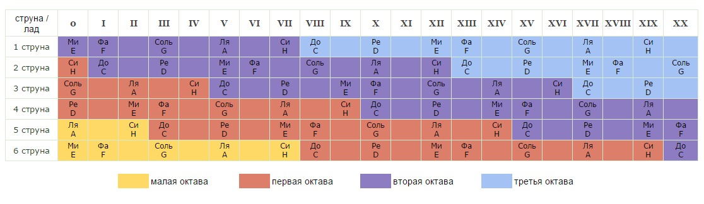
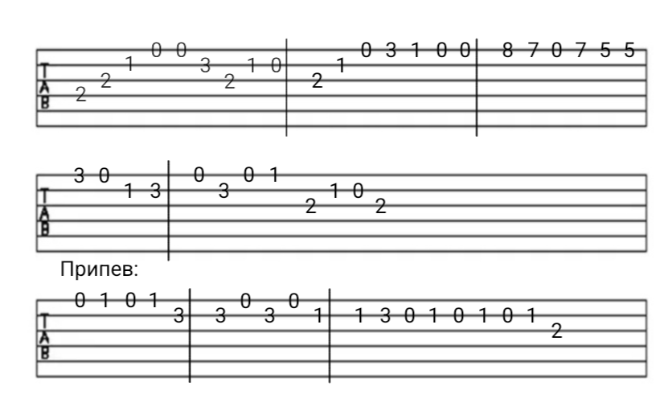

Настройка гитары
| По тюнеру: 440 Герц. G(Guitar) 1 - 1E; 2 - 2B(2H); 3 - 3G; 4 - 4D; 5 - 5A; 6 - 6E, если тюнер не читает, то зажать 5-ый лад, должно быть написано 5A (тоже самое с остальными, кроме 3 и 1 струн. 1 - не проверить, 3 - на 4 ладу). |
На слух: 1 струна - на слух; 2 струна на 5 ладу = звучит как 1 открытая; 3 струна на 4 ладу = 2 открытая; 4 струна на 5 ладу = 3 открытая; 5 струна на 5 ладу = 4 открытая; 6 струна на 5 ладу = 5 открытая. |
Чтение аккордов
| До - C; Ре - D; Ми - E; Фа - F; Соль - G; Ля - A; Си - H; Си бемоль - B; До минор - Cm; До мажор - C; Фа минор - Fm; Фа мажор - F. |
Gm7 - соль минор септаккорд G7 - соль мажор септаккорд; C9 - до мажор нонаккорд; F#m - фа диез минор; Ab - фа бемоль мажор; m - минор; без m - мажор; 7 - септаккорд; 9 - нонаккорд; # - диез; b - бемоль. |
Октавы в гитаре
Октавой называют музыкальный интервал между двумя одинаковыми по звучанию, но разными по высоте, нотами. Кроме этого, так обозначается диапазон из семи нот, которые входят в любую тональность и гамму. Октава на гитаре и других инструментах обычно содержит в себе восемь ступеней и шесть тонов, однако существуют вариации в виде малой и большой октавы.

Практика. Осенний сон
